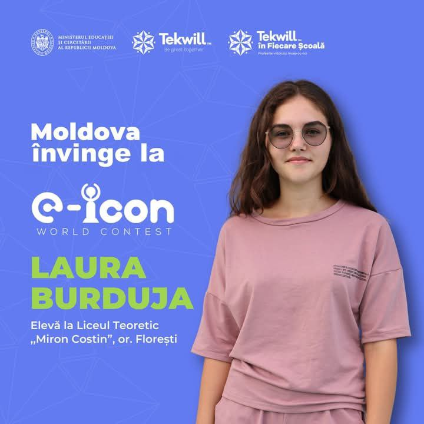
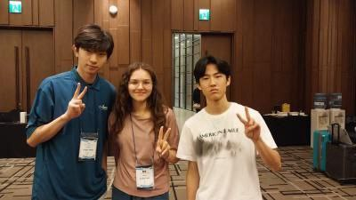
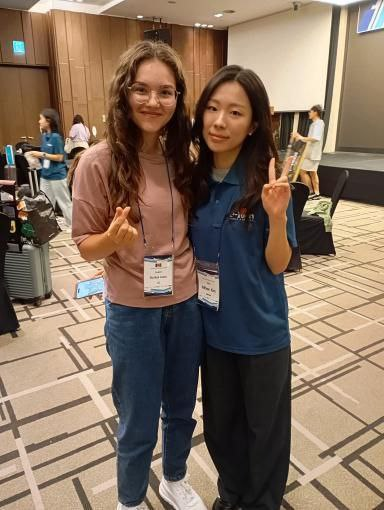
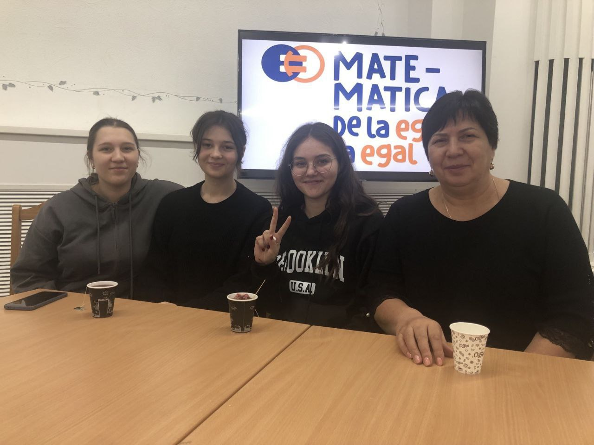
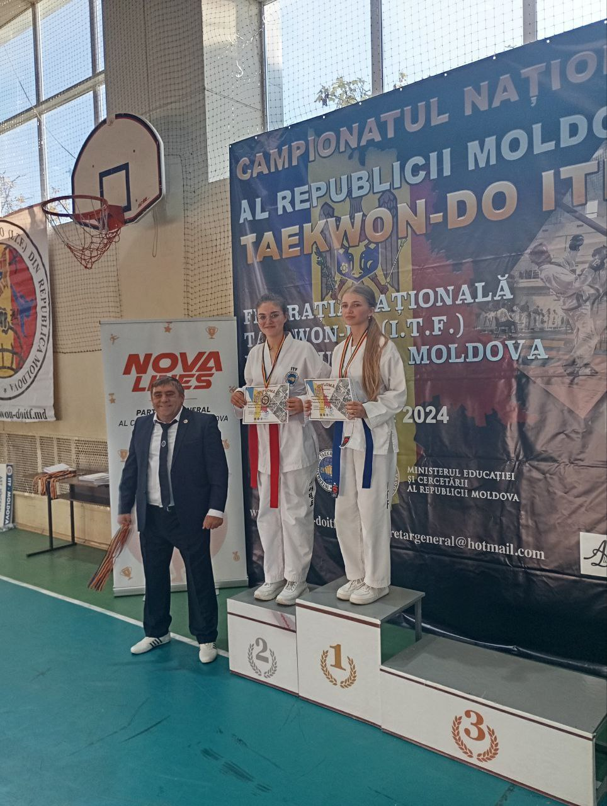

Burduja Laura
|
Eleva la liceu Voluntara Ro Fr En Ru +37368697384 burdujalaura454@gmail.com |
Sunt o eleva motivata, cu pasiune pentru tehnologia informatiei si inovatie digitala. Am obtinut locul II la concursul international "e-ICON World Contest" 2024 din Coreea de Sud, prin dezvoltarea aplicatiei 'MixTape" - un instrument de orientare in cariera pentru tineri, creat in colaborare cu elevi din Coreea si sub indrumarea cadrelor didactice de la Liceul Teoretic "Miron Costin". Aceasta experienta mi-a dezvoltat abilitatile de lucru in echipa multiculturala, comunicare in limba engleza, gandire logica si spirit de initiativa. Ma implic activ in proiecte educationale cu impact social si sunt dornica sa imi continui formarea in domeniul IT, contribuind la solutii utile si relevante pentru generatia mea. |
|  |  |  |  |  |
Experienta
Eleva 09/2023-current
Eleva la liceul teoretic "Miron Costin", Floresti, MD
Sunt eleva in acest liceu de doi ani. Aici am participat la multe proiecte legate de tehnologii
si programare. A fost o experienta foarte buna pentru mine.
Am participat la asa proiecte ca "Tekwill junior ambassadors" cu alicatiile mobile,la concursul
international "e-ICON World Contest" 2024 din Coreea de Sud, prin dezvoltarea aplicatiei "MixTape".
Voluntara la "Matematica de la egal la egal" 01/2025 - Current
Matematica de la egal la egal a fost formata pentru ca tinarii din clasele a 11 si a 12 sa poata sai invate pe elevii din clasa a 9 sa deie cu succes examenul la matematica.este o experieta foarte frumoasa si sunt fericita ca am devenit voluntare la acest proiect minunat.
Invingatoarea la concursul international "e-ICON World Contest" 2024 08/2024
In vara anului 2024 am participat la un concurs international de aplicatii mobile "e-ICON World Contest". Aceasta a avut loc in Coreea de Sud in orasul Seul, prin dezvoltarea aplicatiei 'MixTape" - un instrument de orientare in cariera pentru tineri, creat in colaborare cu elevi din Coreea si sub indrumarea cadrelor didactice de la Liceul Teoretic "Miron Costin", unde am luat locul 2.
Invingatoarea la Tekwill in Fiecare Scoala 05/2024-06/2024
In iunie anul 2024 am participat la Tekwill in Fiecar Scoala care a avut loc in capitala Chisinau. Aici am luat locul 1 la dezvoltarea aplicatiei mobile "Spot on Focus"- o aplicatie care ajuta elevii sa se poata pregati de evaluari de mai inainte pentru a avea succese mari si pentru asi putea coordona bine timpul.
Educatie
Absolventa a gimnaziului "Gura Cainarului" satul Gura Cainarului, 05/2023
Pe 31 mai 2024 am absolvit gimnaziul "Gura Cainarului", am absolvit in clasa a 9a la varsta de 15 ani. Am avut sucese foarte mari in acest gimnaziu.
Eleva in clasa a 11 la I.P.L.T."Miron Costin" Floresti, 09/2023-current
Am devenit eleva aici la 1 septembrie 2023, invat aici deja de 2 ani , sunt clasa a 11a si am 17 ani. Aceast liceu mia oferit multe oportunitati mai ales in tehnologiile moderne si in concursuri nationale si internationale.